에너지관리산업기사 (2006-03-05 기출문제)
1과목: 열역학 및 연소관리
1. 중유의 수송 및 저장시 관리비용에 가장 큰 영향을 미치는 석유제품의 성질은?
- 황함유량
- 착화온도
- 점도
- 비중
(정답률: 68%)

2. 연도가스를 분석한 결과(CO2)=12.6%, (O2)=6.4%였다. 이 연료에서 (CO2)max=21%였다면 공기과잉계수는 얼마인가?
- 1.27
- 1.47
- 1.67
- 1.87
(정답률: 33%)
3. 다음 연료중에서 고위발열량과 저위발열량이 같은 것은?
- 일산화탄소
- 메탄
- 프로판
- 석유
(정답률: 69%)
4. 액화 석유가스(LPG)의 관리 방법중 틀린 것은?
- 찬곳에 저장한다.
- 접속부분의 누설여부를 정기적으로 점검한다.
- 용기 주위에 체류가스가 없도록 통풍을 잘 시킨다.
- 용기의 온도가 60℃ 이내가 되도록 한다.
(정답률: 83%)
5. 대기오염의 원인이 되고 있는 질소산화물의 발생억제 대책으로서 적절한 것은?
- 배기가스 순환연소로 연소용 공기의 산소농도를 높인다.
- 연소를 단계적으로 실시하는 2단 연소법을 채택한다.
- 과잉공기량을 높인다.
- 효율이 큰 버너를 사용하여 연소온도를 높인다.
(정답률: 61%)
6. 시로코(sirocco) 송풍기의 특징이 아닌 것은?
- 축류식이다.
- 다익식이다.
- 풍압이 낮다.
- 경량이다.
(정답률: 60%)
7. 아세틸렌(C2H2) 1Nm3를 공기비 1.1로 완전 연소시켰을 때의 건연소 가스량은 Nm3인가?
- 10.4
- 11.4
- 12.6
- 13.6
(정답률: 44%)
8. 메탄 1연소에 소요되는 이론공기량(Nm3)은?
- 7.3
- 9.5
- 11.1
- 13.2
(정답률: 65%)
9. 중유를 사용하여 연소를 시킬 경우, 고온부식의 원인이 되는 성분은?
- 질소
- 바나듐
- 산화규소
- 황
(정답률: 77%)
10. 다음 중 석탄의 연료비의 정의는?
- 고정탄소 / (고정탄소 + 휘발분)
- 고정탄소 / 휘발분
- 고정탄소 / 공기량
- (고정탄소 + 휘발분) / 공기량
(정답률: 60%)
11. 다음 중 가연원소(可燃元素)가 아닌 것은?
- 탄소
- 수소
- 산소
- 황
(정답률: 54%)
12. 다음 중 공기보다 비중이 커서 누설이 되면 낮은 곳에 고여 인화폭발의 원인이 되는 가스는?
- 수소
- 메탄
- 일산화탄소
- 프로판
(정답률: 82%)
13. 공업분석법에 따라 성분을 정량할 때 순서로 옳은 것은?
- 수분 → 휘발분 → 회분 → 고정탄소
- 수분 → 회분 → 휘발분 → 고정탄소
- 휘발분 → 수분 → 고정탄소 → 회분
- 수분 → 휘발분 → 고정탄소 → 회분
(정답률: 66%)
14. (CO2)max=18.8%, (CO2)=14.2%, (CO)=3.0%일 때 연소가스 중의 (O2)는 몇 %인가?
- 2.97
- 3.63
- 4.53
- 5.83
(정답률: 29%)
15. 올쟛트(Orsat) 분석기 사용시 흡수순서로 옳은 것은?
- CO2 → O2 → CO
- CO2 → CO → O2
- O2 → CO → CO2
- CO → CO2 → O2
(정답률: 75%)
16. 가열실의 이론효율 E1의 표시는? (단, Hℓ : 저발열량, G : 습연소가스량, ti : 연소온도, G' : 건연소가스량, Cpm : 가스의 비열)
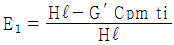
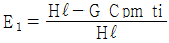
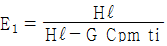
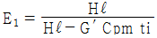
(정답률: 46%)
17. 중유를 버너로 연소시킬 때 연소상태에 가장 적게 영향을 미치는 성질은?
- 황분
- 발열량
- 점도
- 인화점
(정답률: 22%)
18. 다음 중 연돌의 통풍력은?
- 비중량 차이 × 연돌 높이
- 비중 차이 × 연돌 높이
- 압력 차이 × 연돌 높이
- 온도 차이 × 연돌 높이
(정답률: 58%)
19. 노 앞과 연도 끝에 통풍팬을 달아서 노내의 압력을 임의로 조절하는 인공 통풍방식은?
- 압입통풍
- 흡입통풍
- 유인통풍
- 평형통풍
(정답률: 48%)
20. 중유에 수분이 혼입되었을 때의 잘못 표현된 것은?
- 열손실이 된다.
- 연소중 맥동연소를 일으킨다.
- 저장중 현탁부유물(Emulsion Sludge)을 형성한다.
- 발열량이 증가 된다.
(정답률: 75%)
2과목: 계측 및 에너지진단
21. 다음 중 열역학 제2법칙과 관계없는 것은?
- 열은 그 자체만으로 저온체에서 고온체로 흐르지 않는다.
- 제2종의 영구기관은 만들 수 없다.
- 밀폐계에서 엔트로피는 보존되거나 항상 증가한다.
- 모든 일반적인 화학적, 물리적 변화에서 에너지는 창조되거나 소멸되지 않는다.
(정답률: 64%)
22. 교축과정(throttling process)동안 일정하게 유지되는 상태량은?
- 온도
- 압력
- 엔탈피
- 엔트로피
(정답률: 65%)
23. 공기 냉동 cycle은 어느 열기관의 역 cycle인가?
- otto
- Diesel
- Sabath
- Brayton
(정답률: 71%)
24. T-S 선도에서 어느 상태변화를 표시하는 곡선과 S축 사이의 면적은 다음 중 무엇을 표시하는가?
- 일량
- 열량
- 압력
- 비체적
(정답률: 77%)
25. 아래 가스 중에서 기체 상수(gas constant)가 제일 작은 것은?
- N2
- CO
- CO2
- CH4
(정답률: 50%)
26. 정상상태의 유동에 적용되는 연속방정식을 옳게 표시한 식은? (단, A=유로단면적, U=유체속도, V=비체적, ρ=밀도, μ=점도)
- VμA= 일정
- ρμA= 일정
- VUA= 일정
- ρUA= 일정
(정답률: 63%)
27. 두개의 단열과정과 두 개의 등온과정으로 이루어진 사이클은?
- 오토사이클
- 디젤사이클
- 카르노사이클
- 브레이턴사이클
(정답률: 75%)
28. 일정 체적하에서 습층기의 압력을 증가시키면 건도는 어떻게 변화하는가?
- 감소
- 증가
- 일정
- 감소 또는 증가
(정답률: 54%)
29. 다음 싸이클(cycle) 중 상변화를 동반하는 것은?
- 오토 사이클
- 스털링 사이클
- 랭킨 사이클
- 브레이튼 사이클
(정답률: 68%)
30. 체적 4m3, 압력 1kg/cm2g, 온도 32℃인 기체를 체적 5m3, 온도 100℃로 변화하였을 때 압력은 게이지 압력으로 몇 kg/cm2g인가?
- 0.956
- 1.106
- 1.281
- 1.447
(정답률: 32%)
31. 출력 50[PS]인 열기관이 1시간 마다 하는 일의 열상당량은 대략 얼마인가?
- 25600 [kcal]
- 26700 [kcal]
- 31600 [kcal]
- 35500 [kcal]
(정답률: 53%)
32. 압력 4.4[kg/cm2], 체적 1.14m3인 공기가 단열 팽창하여 0.462[kg/cm2]로 되었다. 이 때 체적이 5배라면 외부에 대한 절대 일(absolute work : [kgㆍm])은 얼마인가?
- 191,235
- 65,029
- 59,565
- 51,114
(정답률: 44%)
33. 그림과 같은 사이클에 대한 이론열효울의 표현식으로 옳은 것은?(단, K는 비열비로서 Cp/CV이다.)
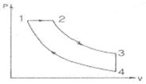
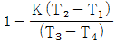
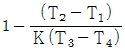
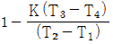
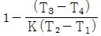
(정답률: 53%)
34. 대기압 상태에서 물에 대한 증발잠열은 몇 kcal/kg인가?
- 0
- 100
- 539
- 597
(정답률: 81%)
35. 동일 체적의 이상기체를 체적이 10배가 되도록 등온팽창 시킬 때와 단열팽창시킨 경우 어느 쪽의 압력이 높은가? (단. Cp/Cv = 1.4 이다.)
- 등온팽창
- 단열팽창
- 동일하다
- 임의적이다.
(정답률: 55%)
36. 이상기체 1몰(mol)이 온도 25℃에서 체적이 20ℓ이였다. 등온가역 과정으로 기체 체적을 2배로 팽창시켰을 때, 엔트로피 변화(△S)는 얼마인가?
- 1.15cal/K
- 1.15cal/(kgㆍK)
- 1.38cal/K
- 1.38cal/(kgㆍK)
(정답률: 42%)
37. 그림과 같은 증기사이클에 대한 설명 중 옳은 것은?
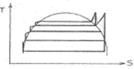
- 1단재열 3단재생
- 1단재열 4단재생
- 2단재열 4단재생
- 3단재열 4단재생
(정답률: 56%)
38. 100W의 전등을 매일 10시간 사용하는 주택이 있다. 1개월간 소비하는 열량은? (단, 1개월은 30일로 한다.)
- 12.5kcal
- 12,810kcal
- 25,800kcal
- 30,000kcal
(정답률: 51%)
39. 관로에서 외부에 대한 열의 출입이 없고 외부에 대한 일과 유입속도를 무시할 때, 유출속도 W2에 대한 식으로 옳은 것은? (단, g는 중력가속도, J는 열의 일당량, i는 엔탈피, 1,2는 입구와 출구를 각각 의미한다.)
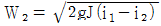
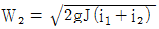
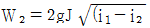
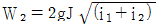
(정답률: 64%)
40. 다음 사이클 중 효율이 가장 높은 것은?
- Otto 사이클
- Carnot 사이클
- Diesel 사이클
- Rankine 사이클
(정답률: 76%)
3과목: 열설비구조 및 시공
41. 물체의 형상변화를 이용하여 온도를 측정하는 것은?
- 저항온도계
- 광온도계
- 제겔콘(Seger cones)
- 열전대온도계
(정답률: 68%)
42. 액면계에서 액면측정 방식을 기술한 것으로 틀린 것은?
- 부자식
- 차압식
- 편위식
- 분동식
(정답률: 68%)
43. 전기적 절연성을 가지며 급열, 급냉에 견디고 기계적 충격에 약한 것이 결점이다. 또한 알칼리에는 약하나 산에는 강하며 상용온도가 1000℃이하인 비금속 보호관은?
- 자기관(반응 알루미나 소결품)
- 카보램덤관
- 석영관
- 고알루미나 자기관
(정답률: 67%)
44. 보일러의 자동 가동장치에서 부속기기의 일련의 순서를 자동화하여 제어하는 방식은?
- 시이퀀스제어
- 피드백제어
- 케스케이드제어
- 비율제어
(정답률: 67%)
45. 다음 중 파라데이 법칙을 이용한 유량계는?
- 전자유량계
- 델타유량계
- 스와르메타
- 초음파유량계
(정답률: 71%)
46. 다음 중 단요소식 수위제어에 관해서 서술한 것으로 옳은 것은?
- 발전용 고압 대용량 보일러의 수위제어에 사용되고 있다.
- 보일러의 수위만을 검출해서 급수량을 조절한 방식이다.
- 수위 조절기의 제어동작에는 PID동작이 채용되고 있다.
- 부하 변동에 의한 수위의 변화록이 대단히 적다.
(정답률: 58%)
47. 다음 중 압력의 계량단위로 틀린 것은?
- Bar
- Ton
- mH2O
- atm
(정답률: 72%)
48. 그림은 증기압력 제어의 병렬제어 방식의 구성을 표시한 것이다. ( )안에 적당한 용어는?
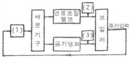
- 1 : 동작신호, 2 : 목표치, 3 : 제어량
- 1 : 조작량, 2 : 설정신호, 3 : 공기량
- 1 : 압력조절기, 2 : 연료공급량, 3 : 공기량
- 1 : 연료공급량, 2 : 공기량, 3 : 압력조절기
(정답률: 77%)
49. 다음과 같은 압력측정장치에서 용기압력은 어떻게 표시되나? (단, 유체의 밀도 ρ, 중력가속도 g로 표시한다.)
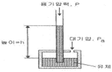
- P = Pa
- P = ρgh
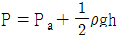
- P = Pa + ρgh
(정답률: 63%)
50. 압력손실은 크나 값이 싸고 정도가 높아 제어 및 측정 분야에 가장 많이 쓰이는 유량계는?
- 면적식 유량계
- 오리피스 유량계
- 벤추리관식 유량계
- 열전식 유량계
(정답률: 52%)
51. 고점도 유체나 작은 유량도 측정할 수 있으며, 슬러리나 부식성 액체의 유량 측정이 가능하나 압력손실이 커 정밀 측정에는 부적당한 유량계는? (단, 예로 피스톤형이 포함된다.)
- 유속식 유량계
- 속도수두측정식 유량계
- 면적식 유량계
- 와류식 유량계
(정답률: 63%)
52. 습식가스미터의 측정원리와 무엇을 계측하고자 하는지 계측 목적이 맞게 짝지어진 것은?
- 피스톤-로타리형 : 액체유량
- 다이아프램형 : 액면 측정
- 오발형 : 기체 유량
- 드럼형 : 기체 유량
(정답률: 47%)
53. 다음 가스분석법중에서 정량 측정범위가 가장 넓은 것은?
- 세라믹법
- 자화율법
- 도전율법
- 가스크로마토 그래프법
(정답률: 48%)
54. 열전대 온도계가 구비해야 할 사항을 설명한 것이다. 맞지 않은 것은?
- 주위의 고온 물체로부터의 복사열을 받지 않도록 주의한 다.
- 열전대 재료는 열기전력이 크고 온도증가에 따라 연속적 으로 상승할 것.
- 열전대는 측정지점에 정확히 삽입하고 그 점에 냉기가 유 입되지 않도록 주의한다.
- 단자의 극성과 보상선의 극성을 바꾸어 결선해야 한다. 즉 단자의 +, -와 보상선의 -, +극을 결선한다.
(정답률: 65%)
55. 제어장치를 사용하여 어떤 프로세스(process)를 운전시 자동제어가 잘되고 있는지를 의논할 때 가장 일반적으로 고려되어야 할 사항 중 옳지 않은 것은?
- 잔류편차(offset)
- 속응성(quick response)
- 외란성(disturbance)
- 안정성(stability)
(정답률: 68%)
56. 탄성식 압력계가 아닌 것은?
- 브로동관 압력계
- 다이아프램 압력계
- 벨로즈 압력계
- 환상 천평식 압력계
(정답률: 80%)
57. 다음 중 압력식 온도계에 속하지 않는 것은?
- 방사압식 온도계
- 액체압식 온도계
- 증기압식 온도계
- 기체압식 온도계
(정답률: 67%)
58. 차압식 유량계는 어떤 원리를 이용한 것인가?
- 토리첼리의 정리
- 베르누이의 정리
- 아르키메데스의 정리
- 탈톤의 정리
(정답률: 59%)
59. 다음 단위중 압력에 대한 단위가 아닌 것은?
- Pa
- N/m2
- J/s
- kgf/m2
(정답률: 59%)
60. 다음 중 연소가스 중의 O2를 분석하는데 가장 알맞은 것은?
- 적외선 분석계
- 가스크로마토 그래프
- 수은 증기 분석계
- 세라믹 분석계
(정답률: 68%)
4과목: 열설비취급 및 안전관리
61. 다음 중 화학적 조성에 의한 내화물의 분류방법으로 적합한 것은?
- 소성내화물
- 화학내화물
- 이형내화물
- 중성내화물
(정답률: 48%)
62. 다음은 개방식 팽창탱크 주위의 배관이다. 관계가 먼 것은?
- 팽창관
- 배기관
- 오버플로관
- 수위계
(정답률: 55%)
63. 요로의 분류 중 불꽃의 방향에 따른 것이 아닌 것은?
- 황염식
- 도염식
- 직화식
- 승염식
(정답률: 60%)
64. 단독가마와 비교할 때 터널가마의 장점에 해당되지 않는 것은?
- 설비비가 싸게 든다.
- 연료가 절약된다.
- 균일하게 소성된다.
- 소성시간이 단축된다.
(정답률: 68%)
65. 난방용 및 병원용 등에 사용되는 전자동식 보일러로 효율이 80~90% 정도가 되는 것은?
- 2중 증발보일러
- 소형관류보일러
- 수직(입형)보일러
- 폐열보일러
(정답률: 61%)
66. 중유를 연소하는 보일러에서 배기하는 성분을 분석한 결과 탄산가스가 11%였다면 공기비는 얼마로 운전되고 있는가? (단, 중유CO2max : 15.7% 이다.)
- 0.72
- 1.02
- 1.43
- 11.31
(정답률: 47%)
67. 다음 보온재중 안전사용 온도가 가장 높은 것은?
- 스티로폴
- 규산칼슘
- 세라믹우울
- 경질폴리우레탄포옴
(정답률: 49%)
68. 관 판의 두께가 10mm이고, 관 구멍의 직경이 30mm인 연관 보일러의 연관의 최소 피치는?
- 64.2mm
- 54.8mm
- 43.5mm
- 36.1mm
(정답률: 40%)
69. 열교환기의 성능을 향상시킬 수 있는 방법이 아닌 것은?
- 열전도율이 큰 재료를 사용한다.
- 유체의 흐름방향을 병류로 한다.
- 유체의 유속을 빠르게 한다.
- 두 유체의 온도차를 크게 한다.
(정답률: 62%)
70. Fourier 법칙의 설명으로 틀린 것은?
- 열전달 속도는 일반적인 속도와 같이 기력/저항으로 표시 한다.
- 열전달 속도는 면적과 온도구배의 곱에 비례한다.
- 열전달에 있어서 기력(driving force)은 온도차이다.
- 열전달 저항은 전달 면적과 두께의 비이다.
(정답률: 47%)
71. 보일러의 1마력은?
- 15.65(kg/h)/상당증발량
- 상당증발량×16.65(kg/h)
- 실제증발량/15.65(kg/h)
- 상당증발량/15.65(kg/h)
(정답률: 66%)
72. 스팀 트랩을 사용하는 목적으로 맞는 것은?
- 증기관의 도중에 설치하여 압력이 급상승 또는 급히 물이 들어가는 경우 다른곳으로 빼내는 안전장치이다.
- 증기관의 도중에 설치하여 증기를 함유한 침전물을 분리 시키는 장치이다.
- 보일러 도중에 설치하여 드레인을 빼내는 장치이다.
- 증기관의 도중에 설치하여 증기의 일부가 드레인상태로 괴어있을 때 그 물을 자동적으로 빼내는 장치이다.
(정답률: 63%)
73. 다음 중 일반적인 부정형 내화물에 속하지 않는 것은?
- 내화 모르타르
- 캐스터블 내화물
- 플라스틱 내화물
- 불소성 내화물
(정답률: 60%)
74. 필렛 용접이음에서 강판의 두께를 h, 하중을 W, 용접길이를 ℓ이라 할 때 인장응력을 계산하는 식은?
- σ = W/0.707hℓ
- σ = Wℓ/0.707h
- σ = W/hℓ
- σ = 0.707W/hℓ
(정답률: 59%)
75. 크로마그네시아(chrome-magnesia) 내화물의 주요한 특성은?
- 소성품을 사용할 때는 접합부에 철판을 넣어 사용한다.
- 비중이 크고 염기성 슬래그에 대한 저항이 크다.
- 버스팅(bursting)현상을 방지하기 위하여 MgO의 함량을 줄인다.
- 소성품이 불소성품보다 스폴링저항이 우수하다.
(정답률: 59%)
76. 보일러 급수에 관계되는 P(phenolphthalein) 알칼리도를 설명한 것으로 틀린 것은?
- 수중의 중탄산염, 탄산염, 수산화물, 인산염, 규산염 등의 알칼리도 일부로서 pH8.0보다도 높은 pH 부분의 알칼리 분 농도이다.
- 페놀프탈레인과 치몰본의 혼합지시약을 사용해서 유산으로 측정하여 그 소비량을 이에 상당한 CaCO3ppm으로 표시한 것이다.
- 물속의 알칼리분을 표시한 지수이다.
- 물속의 Ca2+, Mg2+의 양을 표시한 지수이다.
(정답률: 59%)
77. 금속공업로의 에너지 절감대책 기본과제로서 공연비 개선의 일환으로 공기비 수정과 공기예열의 상승효과를 얻을 수 있는 식으로 적당한 것은? (단, 연료는 중유 1종 1호를 사용할 경우, ST= 전 절약율(%), SP= 공기예열에 의한 절약율(%), SA = 공기비 수정에 의한 절약율(%) a = 리큐퍼레이터 등의 특성에 의한 계수(a≒1))
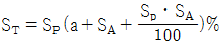
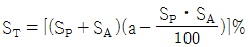
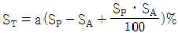
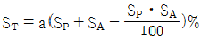
(정답률: 44%)
78. 다음은 보일러 부하가 너무 많이 걸려 미치는 영향에 대한 설명이다. 이 중 틀리는 것은?
- 보일러 설비안정성이 저하된다.
- 프라이밍을 발생하기 쉽다.
- 증발계수가 크게 된다.
- 전열면의 증발율이 크게 된다.
(정답률: 51%)
79. 전열면에 대한 다음 설명 중 옳은 것은?
- 복사, 대류, 접촉 전열면으로 구분한다.
- 연료의 연소열을 관수(보일러수)에 전달하는 면을 말한다.
- 한 쪽에는 관수(보일러수)가 접촉하고, 다른 쪽에는 연소 가스가 접촉하는 면으로 연소가스가 접촉하는 면을 말한다.
- 수관은 내경이 기준이고, 연관은 외경이 기준으로 된다.
(정답률: 60%)
80. 노통 연관보일러의 노통 바깥면(노통에 돌기를 설치하는 경우에는 돌기의 바깥면)과 이에 가장 가까운 연관과의 사이에는 몇 mm이상의 틈새를 두어야 하는가?
- 10mm
- 30mm
- 50mm
- 70mm
(정답률: 63%)